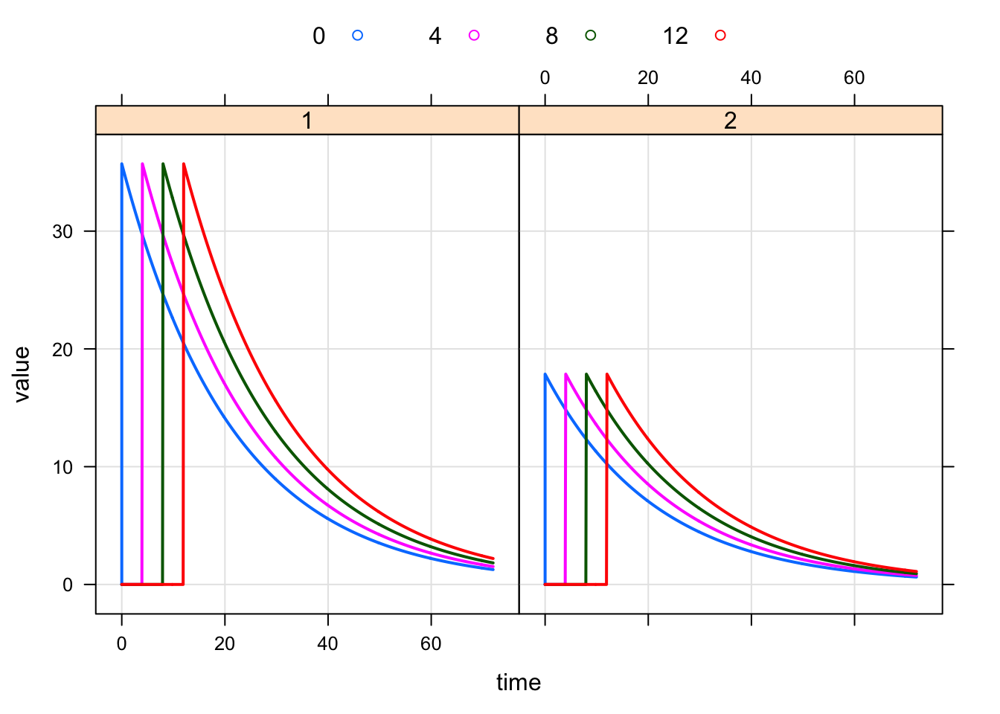
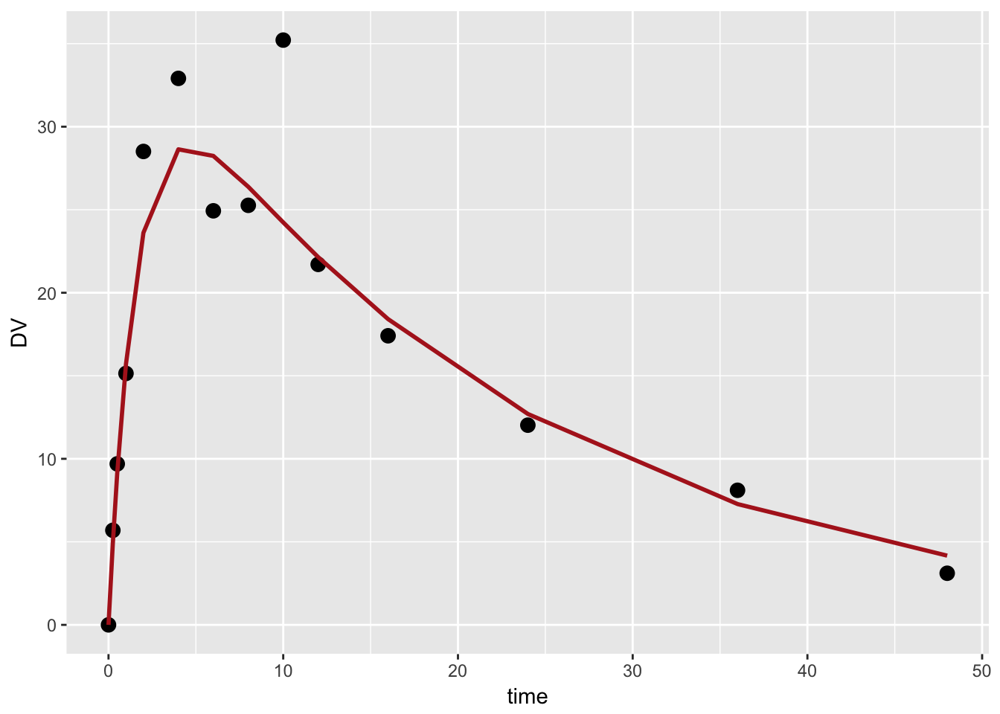
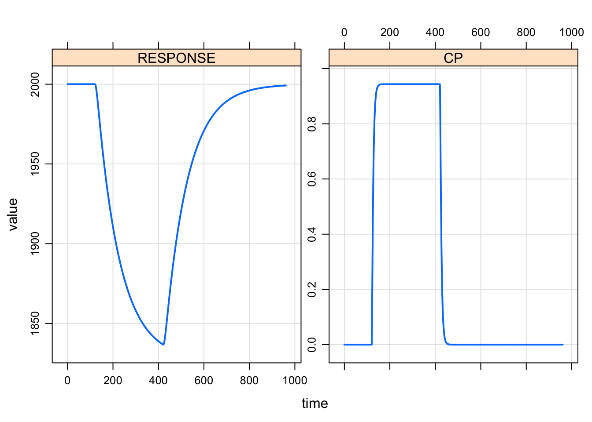
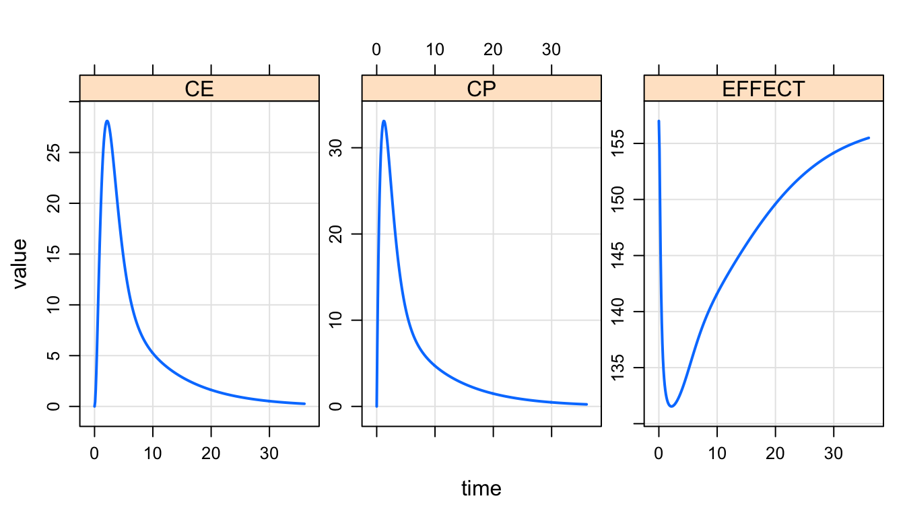
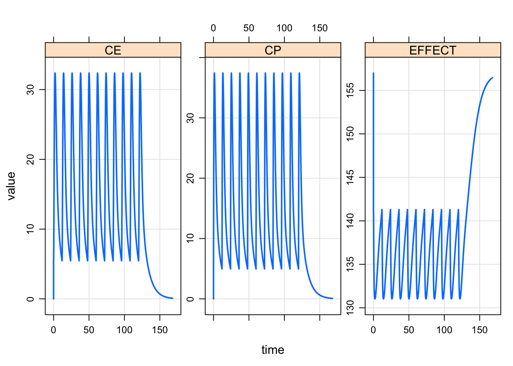
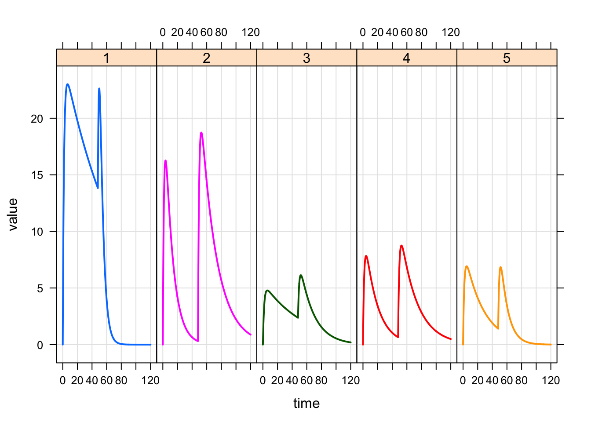
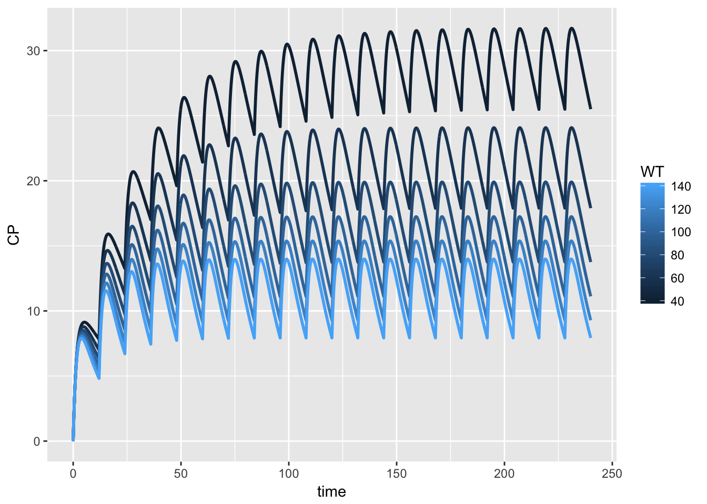
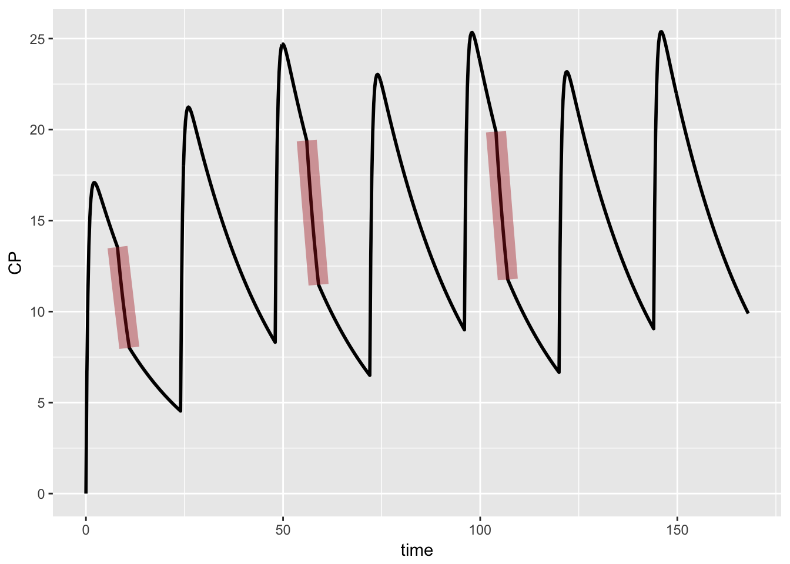

- Load packages required for the gallery
- Simple PK model
- PK model with different bioavability and dosing lag time
- PK model with residual error
- Indirect response model driven by continuous PK
- Indirect response model driven by metric summarizing exposure
- Effect compartment model
- Population PK model with covariates and
IOV - PK with dialysis sessions 3 times per week
- References
- Session Info
library(lattice)
library(ggplot2)
library(dplyr)Load packages required for the gallery
library(mrgsolve)
library(dplyr)
library(ggplot2)
library(magrittr)
library(tidyr)Simple PK model
About this model specification code
- We set a simulation grid of 0.1 units in
$SET - Compartment number (2) and names (
GUTandCENT) are established in$CMT - For dosing purposes,
GUTis compartment 1 andCENTis compartment 2 due to the order of their declaration - Compartment names and numbers can be checked with
init(mod)
code <- '
$PARAM CL = 1.3, VC=28, KA=0.6
$SET delta=0.1
$CMT GUT CENT
$ODE
dxdt_GUT = -KA*GUT;
dxdt_CENT = KA*GUT - (CL/VC)*CENT;
$TABLE double CP = CENT/VC;
$CAPTURE CP
'Compile and load
mod <- mread("gallery1", tempdir(),code)
mod.
.
. -------- mrgsolve model object (unix) --------
. Project: /private/var/fol...mfzgl95fq8mx6tjxkzb71r0000gn/T/RtmpNs5TED
. source: gallery1.cpp
. shared object: gallery1-so-17c3a53bd2323
.
. compile date:
. Time: start: 0 end: 24 delta: 0.1
. > add: <none>
. > tscale: 1
.
. Compartments: GUT CENT [2]
. Parameters: CL VC KA [3]
. Omega: 0x0
. Sigma: 0x0
.
. Solver: atol: 1e-08 rtol: 1e-08
. > maxsteps: 2000 hmin: 0 hmax: 0Run with initial value
out <- mod %>% init(GUT=1000) %>% mrgsim(end=72)
plot(out)
out. Model: gallery1.cpp
. Dim: 721 x 5
. Time: 0 to 72
. ID: 1
. ID time GUT CENT CP
. [1,] 1 0.0 1000.0 0.0 0.000
. [2,] 1 0.1 941.8 58.1 2.075
. [3,] 1 0.2 886.9 112.5 4.019
. [4,] 1 0.3 835.3 163.6 5.841
. [5,] 1 0.4 786.6 211.3 7.547
. [6,] 1 0.5 740.8 256.0 9.145
. [7,] 1 0.6 697.7 297.9 10.639
. [8,] 1 0.7 657.0 337.1 12.038Run with events object
out <- mod %>% ev(amt=1000, ii=12, addl=15) %>% mrgsim(end=336)
plot(out)
The events object was just a simple data set that looks like this
dosing <- events(out)
dosing. Events:
. time cmt amt ii addl evid
. 1 0 1 1000 12 15 1Run with data set
Just like the events object, but we can make it more complicated, specify more people, etc…
data <- expand.ev(amt=c(300,1000,3000), ii=12, addl=6) %>% mutate(dose=amt)
data. ID amt ii addl evid cmt time dose
. 1 1 300 12 6 1 1 0 300
. 2 2 1000 12 6 1 1 0 1000
. 3 3 3000 12 6 1 1 0 3000out <- mod %>% data_set(data) %>% carry.out(dose) %>% Req(CP) %>% mrgsim(end=168)plot(out, CP~time|factor(dose),scales="same")
PK model with different bioavability and dosing lag time
About this model specification code
- Set
F_CENTandALAG_CENTin$MAIN - Since
F_CENTis set toF1andALAG_CENTis set toALG; sinceF1andALGare named in$PARAM, we can update them on theRside either throughparamor in an input data set that is also determined on theRside of things
code <- '
$PARAM CL = 1.3, VC=28, KA=0.6, ALG=0, F1=1,FORM=1
$SET delta=0.1
$CMT CENT
$MAIN
F_CENT = 1;
// Formulation 2 has lower bioavailability
if(FORM==2) F_CENT = F1;
// Same lag time across formulations
ALAG_CENT = ALG;
$ODE dxdt_CENT = - (CL/VC)*CENT;
$TABLE double CP = CENT/VC;
$CAPTURE CP
'Compile and load
mod <- mread("gallery2", tempdir(), code)Dose into the central compartment. Also, ALG, F1, and FORM are updated via the data set and therefore need to be columns in the data set and listed in $PARAM
data <-
expand.ev(amt=1000, ALG=seq(0,12,4),FORM=c(1,2)) %>%
mutate(F1 = ifelse(FORM==1,1,0.5))
data. ID amt ALG FORM evid cmt time F1
. 1 1 1000 0 1 1 1 0 1.0
. 2 2 1000 4 1 1 1 0 1.0
. 3 3 1000 8 1 1 1 0 1.0
. 4 4 1000 12 1 1 1 0 1.0
. 5 5 1000 0 2 1 1 0 0.5
. 6 6 1000 4 2 1 1 0 0.5
. 7 7 1000 8 2 1 1 0 0.5
. 8 8 1000 12 2 1 1 0 0.5out <- mod %>% data_set(data) %>% carry.out(FORM,ALG) %>% mrgsim(end=72)
plot(out, CP~time|factor(FORM),group=ALG,
scales="same", auto.key=list(columns=4))
PK model with residual error
About this model specification code
$SIGMAsets the variance ofEPS(n)- Setting
endto a value less than 0 will signalmrgsolveto skip the simulation time grid - We specify
addto get a specific set of simulation times (not necessarily evenly spaced)
code <- '
$PARAM CL = 1.3, VC=28, KA=0.6
$GLOBAL #define CP (CENT/VC)
$SIGMA 0.025
$SET end=-1, add=c(0,0.25,0.5,1,2,4,6,8,10,12,16,24,36,48)
$CMT GUT CENT
$ODE
dxdt_GUT = -KA*GUT;
dxdt_CENT = KA*GUT - (CL/VC)*CENT;
$CAPTURE CP DV
$TABLE double DV = CP*exp(EPS(1));
'
mod <- mread("ruv", tempdir(), code) set.seed(3203)
out <-
mod %>%
init(GUT=1000) %>%
obsonly %>%
mrgsim(Req="CP,DV") %>% as.data.frame
ggplot(data=out, aes(x=time)) +
geom_point(aes(y=DV),size=3) +
geom_line(aes(y=CP), col="firebrick",lwd=1)
Indirect response model driven by continuous PK
About this model specification code
CPis “defined” in$GLOBALINHis declared as a double precision variable in$ODEINHwill be available globally (mrgsolvewill declare the variable in$GLOBALfor you)INHcan be changed at any time, butCPcannot- Both
CPandINHcan be inserted into output in$TABLEor$CAPTURE
code <- '
$PARAM CL = 5.3, VC=28, KA=0.6, KIN=20, KOUT=0.01, IC50=10
$SET delta=0.1
$CMT GUT CENT RESPONSE
$GLOBAL
#define CP (CENT/VC)
$MAIN
RESPONSE_0 = KIN/KOUT;
$ODE
double INH = CP/(IC50+CP);
dxdt_GUT = -KA*GUT;
dxdt_CENT = KA*GUT - (CL/VC)*CENT;
dxdt_RESPONSE = KIN*(1-INH) - KOUT*RESPONSE;
$CAPTURE CP INH
'
mod <- mread("gallery3", tempdir(), code)
out <- mod %>%
ev(time=120,amt=1500,rate=5) %>%
Req(CP,RESPONSE) %>% mrgsim(end=480*2)
plot(out)
Indirect response model driven by metric summarizing exposure
About this model specification code
- Take out the PK model
AUCwill drive the PD modelAUCis declared in$PARAM; we will manipulate that value (AUC>0 for on treatment, AUC==0 for off treatment) through the input data set
code <- '
$PARAM AUC=0, KIN=100, KOUT=0.2, AUC50=10
$SET delta=0.1
$CMT RESPONSE
$GLOBAL
#define INH (AUC/(AUC50+AUC))
$MAIN
RESPONSE_0 = KIN/KOUT;
$ODE
dxdt_RESPONSE = KIN*(1-INH) - KOUT*RESPONSE;
$CAPTURE AUC
'
mod <- mread("gallery5", tempdir(), code)Make a template data set with evid=2 and AUC to drive the PD model
data <-
ev(ID=1,evid=2,AUC=15, ii=48,addl=0,amt=0) %then%
ev(ID=1,evid=2,AUC=0,amt=0)
data. Events:
. ID time cmt AUC ii addl amt evid
. 1 1 0 1 15 48 0 0 2
. 2 1 48 1 0 0 0 0 2out <- mod %>% data_set(data) %>% obsonly %>% mrgsim(end=120)
plot(out)
Effect compartment model
About this model specification code
- This code replicates model PD21 in Gabrielsson and Weiner 2007.
code <- '
$PARAM
VC = 2.44, KA = 0.92, K10 = 0.44, K12 = 0.36, K21 = 0.24
E0 = 157, EMAX = 29.95, EC50=4.956, KEO=1.305
$SET delta=0.1, end=36
$CMT GUT CENT PERIPH CE
$ODE
double CP = CENT/VC;
dxdt_GUT = -KA*GUT;
dxdt_CENT = KA*GUT - K10*CENT - K12*CENT + K21*PERIPH;
dxdt_PERIPH = K12*CENT - K21*PERIPH;
dxdt_CE = KEO*(CP-CE);
$TABLE
capture EFFECT = E0 - EMAX*CE/(CE+EC50);
CP = CENT/VC;
$CAPTURE EFFECT CP
'
mod <- mread("effcmt", tempdir(), code)Simulate a snigle 200 unit dose
out <- mod %>% ev(amt=200) %>% obsonly %>% mrgsim(Req="CP,CE,EFFECT")plot(out)
Simulate steady state PK/PD under Q12 hour dosing
out <-
mod %>%
ev(amt=200,ss=1,ii=12,addl=10)%>%
mrgsim(Req="CP,CE,EFFECT", end=168)
plot(out)
Population PK model with covariates and IOV
About this control stream
IOVis declared as double precision variable that is set to eitherETA(4)orETA(5)- We need to make sure that \(\omega^2_{4}\) and \(\omega^2_{5}\) are equal
- We assign different names to the first and second
$OMEGAmatrices so we can update them by name later - We are tabling out some
ETAsto look at them later as well; this is for demonstration purposes
code <- '
$PARAM TVCL = 1.3, TVVC=28, TVKA=0.6, WT=70, OCC=1
$SET delta=0.1
$CMT GUT CENT
$MAIN
double IOV = EOC1;
if(OCC==2) IOV = EOC2;
double CLi = exp(log(TVCL) + 0.75*log(WT/70) + ECL + IOV);
double VCi = exp(log(TVVC) + EVC);
double KAi = exp(log(TVKA) + EKA);
$OMEGA
@name IIV @labels ECL EVC EKA
0 0 0
$OMEGA @name IOV @labels EOC1 EOC2
0 0
$SIGMA 0
$ODE
dxdt_GUT = -KAi*GUT;
dxdt_CENT = KAi*GUT - (CLi/VCi)*CENT;
$TABLE
double CP = CENT/VCi;
double ETA1 = ETA(1);
double ETA2 = ETA(2);
$CAPTURE IOV CP ETA1 ETA2
'
mod <- mread("gallery4", tempdir(), code)Set up dosing events; occasion 2 is the second dose
dose <- ev(amt=300,OCC=1) + ev(amt=300,time=48,OCC=2)
dose. Events:
. time cmt amt OCC evid
. 1 0 1 300 1 1
. 2 48 1 300 2 1ETAs are all zeros per the model specification code
out <- mod %>% ev(dose) %>% mrgsim(end=120, nid=5)
plot(out)
Update $OMEGA
mod <- mod %>% omat(IIV=cmat(0.1, 0.45, 0.3, 0,0,0), IOV=dmat(0.5,0.5))And check the result
revar(mod). $omega
. $IIV
. [,1] [,2] [,3]
. ECL: 0.10000000 0.07794229 0
. EVC: 0.07794229 0.30000000 0
. EKA: 0.00000000 0.00000000 0
.
. $IOV
. [,1] [,2]
. EOC1: 0.5 0.0
. EOC2: 0.0 0.5
.
.
. $sigma
. $...
. [,1]
. 1: 0Simulate and plot
out <- mod %>% ev(dose) %>% mrgsim(end=120,nid=5,seed=9765)ETAs
plot(out,ETA1+ETA2+IOV~time|factor(ID),scales="same", layout=c(5,3))
PK
plot(out,CP~time|factor(ID),scales="same", layout=c(5,1))
Just look at WT with no IIV/IOV
mod <- mod %>% drop.redata <- expand.ev(amt=300,ii=12, addl=19,WT=seq(40,140,20))
out <- mod %>% data_set(data) %>% Req(CP) %>% mrgsim(end=240, carry.out="WT")
out %>%
as.tbl %>%
ggplot(data=., aes(x=time, y=CP,col=WT,group=ID)) +
geom_line(lwd=1)
Cmin versus weight
out %>% subset(time==240) %>%
ggplot(data=.,aes(x=WT,y=CP)) +
geom_line(lwd=1) + geom_point(size=3) + xlab("Cmin")
PK with dialysis sessions 3 times per week
’
About this control stream
GUTandCENTare regular compartment; we have to provide a differential equation for eachDIALis a compartment that only holds a value;dxdt_DIALwill automatically be set to0CLaddis the additional drug clearance while on dialysis
code <- '
$PARAM CL=0.7, VC=16, KA=1.8, CLadd = 2.1
$CMT GUT CENT
$VCMT DIAL
$ODE
dxdt_GUT = -KA*GUT;
dxdt_CENT = KA*GUT - (CL + CLadd*DIAL)*CENT/VC;
$TABLE double CP = CENT/VC;
$CAPTURE CP
'mod <- mread("dialysis", tempdir(), code) %>% update(end=336, delta=0.25)Data assembly for doses and dialysis sessions
Set up three weeks of dosing
doses <- expand.ev(amt=300, ii=24, addl=13)MWF dialysis sessions
mon <- expand.ev(time=0,ii=7*24,addl=2,cmt=3,evid=8,amt=1)
wed <- mon %>% mutate(time=2*24)
fri <- wed %>% mutate(time=4*24)Dialysis starts 8 hours after the AM dose
dial_start <- bind_rows(mon,wed,fri) %>% mutate(time=time+8)Dialysis lasts 3 hours
dial_end <- dial_start %>% mutate(time = time+3, amt=0)Doses and dialysis
events <-
bind_rows(dial_start,dial_end,doses) %>%
arrange(time) %>% as.data.frame %>% as.ev
events. Events:
. ID time ii addl cmt evid amt
. 1 1 0 24 13 1 1 300
. 2 1 8 168 2 3 8 1
. 3 1 11 168 2 3 8 0
. 4 1 56 168 2 3 8 1
. 5 1 59 168 2 3 8 0
. 6 1 104 168 2 3 8 1
. 7 1 107 168 2 3 8 0Simulate
out <- mod %>% ev(events) %>% obsonly %>% mrgsimplot(out)
PK plot with dialysis sessions marked in red
out %>% as.tbl %>% filter(time <=7*24) %>%
ggplot(data=., aes(x=time, y=CP)) + geom_line(lwd=1) +
geom_path(data=dial,col="firebrick", lwd=6, alpha=0.4). Warning: Removed 1 rows containing missing values (geom_path).
References
J. Gabrielsson and D. Weiner. Pharmacokinetic and Pharmacodynamic Data Analysis: Concepts and Applications, Fourth Edition. Taylor & Francis, 2007.
Session Info
devtools::session_info(). setting value
. version R version 3.4.0 (2017-04-21)
. system x86_64, darwin15.6.0
. ui X11
. language (EN)
. collate en_US.UTF-8
. tz America/Chicago
. date 2017-06-10
.
. package * version date source
. assertthat 0.2.0 2017-04-11 CRAN (R 3.4.0)
. backports 1.1.0 2017-05-22 CRAN (R 3.4.0)
. base * 3.4.0 2017-04-21 local
. blogdown 0.0.41 2017-05-27 Github (rstudio/blogdown@a367835)
. bookdown 0.4 2017-05-27 Github (rstudio/bookdown@b9f0e40)
. codetools 0.2-15 2016-10-05 CRAN (R 3.4.0)
. colorspace 1.3-2 2016-12-14 CRAN (R 3.4.0)
. compiler 3.4.0 2017-04-21 local
. datasets * 3.4.0 2017-04-21 local
. DBI 0.6-1 2017-04-01 CRAN (R 3.4.0)
. devtools 1.13.2 2017-06-02 CRAN (R 3.4.0)
. digest 0.6.12 2017-01-27 CRAN (R 3.4.0)
. dplyr * 0.5.0 2016-06-24 CRAN (R 3.4.0)
. evaluate 0.10 2016-10-11 CRAN (R 3.4.0)
. ggplot2 * 2.2.1 2016-12-30 CRAN (R 3.4.0)
. graphics * 3.4.0 2017-04-21 local
. grDevices * 3.4.0 2017-04-21 local
. grid 3.4.0 2017-04-21 local
. gtable 0.2.0 2016-02-26 CRAN (R 3.4.0)
. htmltools 0.3.6 2017-04-28 CRAN (R 3.4.0)
. knitr 1.16 2017-05-18 CRAN (R 3.4.0)
. labeling 0.3 2014-08-23 CRAN (R 3.4.0)
. lattice * 0.20-35 2017-03-25 CRAN (R 3.4.0)
. lazyeval 0.2.0 2016-06-12 CRAN (R 3.4.0)
. magrittr * 1.5 2014-11-22 CRAN (R 3.4.0)
. memoise 1.1.0 2017-04-21 CRAN (R 3.4.0)
. methods * 3.4.0 2017-04-21 local
. mrgsolve * 0.8.6 2017-03-16 CRAN (R 3.4.0)
. munsell 0.4.3 2016-02-13 CRAN (R 3.4.0)
. plyr 1.8.4 2016-06-08 CRAN (R 3.4.0)
. R6 2.2.1 2017-05-10 CRAN (R 3.4.0)
. Rcpp 0.12.11 2017-05-22 CRAN (R 3.4.0)
. RcppArmadillo 0.7.800.2.0 2017-04-13 CRAN (R 3.4.0)
. rmarkdown 1.5 2017-04-26 CRAN (R 3.4.0)
. rprojroot 1.2 2017-01-16 CRAN (R 3.4.0)
. scales 0.4.1 2016-11-09 CRAN (R 3.4.0)
. stats * 3.4.0 2017-04-21 local
. stringi 1.1.5 2017-04-07 CRAN (R 3.4.0)
. stringr 1.2.0 2017-02-18 CRAN (R 3.4.0)
. tibble 1.3.0 2017-04-01 CRAN (R 3.4.0)
. tidyr * 0.6.3 2017-05-15 CRAN (R 3.4.0)
. tools 3.4.0 2017-04-21 local
. utils * 3.4.0 2017-04-21 local
. withr 1.0.2 2016-06-20 CRAN (R 3.4.0)
. yaml 2.1.14 2016-11-12 CRAN (R 3.4.0)